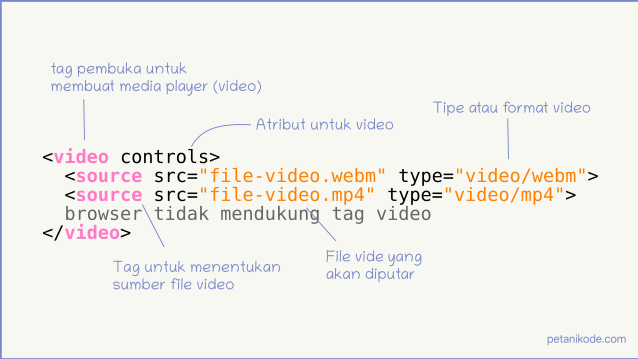

Bagaimana cara membuatnya?, Pahami dulu ini!!
Kita membutuhkan sebuah media player untuk menampilkan video di HTML. HTML sekarang punya tag baru untuk membuat media player, yakni tag " video ".
Jika tag video di buka pada browser yang tidak mendukungnya, maka teks browser tidak mendukung tag video akan ditampilkan.
Oke, langsung aja ke contohnya dibawah ini :
atribut untuk tag video, antara lain :
| Nama Atribut | Nilai | Fungsi |
|---|---|---|
| autoplay | true/false | Agar video diputar otomatis |
| controls | true/false | AUntuk mengaktifkan control video player |
| loop | true/false | Untuk memutar video secara terus menerus |
| muted | true/false | Untuk menonaktifkan video |
| poster | image path | Untuk menentukan cover dari video |
| width & height | angka | Untuk menentukan tinggi dan lebar video |
| playsinline | true/false | Untuk memutar video secara 'inline' |
kita juga bisa menggunakan tag video untuk menambahkan GIF pada halaman HTML.
Caranya sama seperti menambahkan video biasa, tapi kita harus mengaktifkan beberapa atribut seperti autoplay, muted, playsinline dan loop.
Contoh Video sebagai gif
cara menambahkan video dari youtube
Tag yang kita butuhkan untuk menambahkan video dari Youtube adalah "iframe". Tag ini sebenarnya berfungsi untuk menambahkan halaman lain dalam sebuah frame.